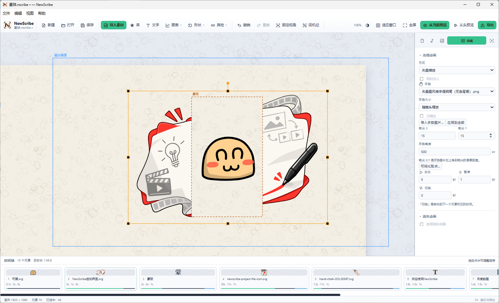
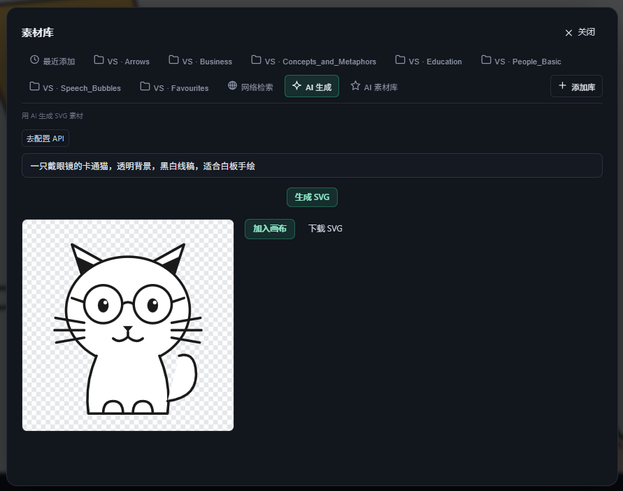

逐笔出现的白板感
矢量描绘沿 SVG 路径描边，位图描绘按内容涂抹；手绘手势和镜头运动让画面像真的被画出来。
NEWSCRIBE · 0.1.1
本地优先的手绘白板动画工作台。摆放图片、SVG、文字、图形、图表、公式和分子结构，用手势、镜头与时间轴把它们变成 MP4。
Windows / macOS · MIT 开源 · 本地运行

WHY NEWSCRIBE
它不是视频剪辑软件，也不是在线模板工具。它把“把内容画出来”这件事做得足够直接。
矢量描绘沿 SVG 路径描边，位图描绘按内容涂抹；手绘手势和镜头运动让画面像真的被画出来。
工程和素材在本地。`.nscribe` 便于日常编辑，`.nspkg` 是带素材的单文件分享包。
原生图表、表格、二维码、LaTeX 公式、SMILES 分子结构和国际音标都能直接上画布。
出现、停留、切换、消失和镜头各管一件事。先粗排，再细调，最后导出 MP4。
THE WORKSPACE



用 NewScribe 制作的首个视频，已经可以在 Bilibili 看到。观看视频 →
DOWNLOAD
首个公开版本正在准备中。安装包发布后会放在 GitHub Releases。
Windows 10 / 11 · x64
Apple Silicon / Intel
当前没有可下载的正式安装包。发布后，Windows 用户下载 setup.exe，macOS 用户下载 dmg。
OPEN SOURCE
NewScribe 受 Sparkol VideoScribe 启发，但不包含任何 VideoScribe 代码。代码使用 DeepSeek V4.1 Flash 1017 模型进行 Vibe Coding 制作。